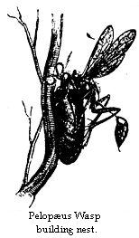
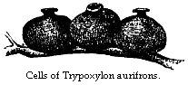

Situation of Santarem — Manners and Customs of the Inhabitants — Climate — Grassy Campos and Woods — Excursions to Mapirí, Mahicá, and Irurá, with Sketches of their Natural History; Palms, Wild Fruit Trees, Mining Wasps, Mason Wasps, Bees, and Sloths
I have already given a short account of the size, situation, and general appearance of Santarem. Although containing not more than 2500 inhabitants, it is the most civilised and important settlement on the banks of the main river from Peru to the Atlantic. The pretty little town, or city as it is called, with its rows of tolerably uniform, white-washed and red-tiled houses surrounded by green gardens and woods, stands on gently sloping ground on the eastern side of the Tapajos, close to its point of junction with the Amazons. A small eminence on which a fort has been erected, but which is now in a dilapidated condition, overlooks the streets, and forms the eastern limit of the mouth of the tributary. The Tapajos at Santarem is contracted to a breadth of about a mile and a half by an accretion of low alluvial land, which forms a kind of delta on the western side; fifteen miles further up the river is seen at its full width of from ten to a dozen miles, and the magnificent hilly country, through which it flows from the south, is then visible on both shores. This high land, which appears to be a continuation of the central table-lands of Brazil, stretches almost without interruption on the eastern side of the river down to its mouth at Santarem. The scenery as well as the soil, vegetation, and animal tenants of this region, are widely different from those of the flat and uniform country which borders the Amazons along most part of its course. After travelling week after week on the main river, the aspect of Santarem with its broad white sandy beach, limpid dark-green waters, and line of picturesque hills rising behind over the fringe of green forest, affords an agreeable surprise. On the main Amazons, the prospect is monotonous unless the vessel runs near the shore, when the wonderful diversity and beauty of the vegetation afford constant entertainment. Otherwise, the unvaried, broad yellow stream, and the long low line of forest, which dwindles away in a broken line of trees on the sea-like horizon and is renewed, reach after reach, as the voyages advances, weary by their uniformity.
I arrived at Santarem on my second journey into the interior, in November, 1851, and made it my head-quarters for a period, as it turned out, of three years and a half. During this time I made, in pursuance of the plan I had framed, many excursions up the Tapajos, and to other places of interest in the surrounding region. On landing, I found no difficulty in hiring a suitable house on the outskirts of the place. It was pleasantly situated near the beach, going towards the aldeia or Indian part of the town. The ground sloped from the back premises down to the waterside and my little raised veranda overlooked a beautiful flower-garden, a great rarity in this country, which belonged to the neighbours. The house contained only three rooms, one with brick and two with boarded floors. It was substantially built, like all the better sort of houses in Santarem, and had a stuccoed front. The kitchen, as is usual, formed an outhouse placed a few yards distant from the other rooms. The rent was 12,000 reis, or about twenty-seven shillings a month. In this country, a tenant has no extra payments to make; the owners of house property pay a dizimo or tithe, to the “collectoria geral,” or general treasury, but with this the occupier of course has nothing to do. In engaging servants, I had the good fortune to meet with a free mulatto, an industrious and trustworthy young fellow, named José, willing to arrange with me; the people of his family cooked for us, whilst he assisted me in collecting; he proved of the greatest service in the different excursions we subsequently made. Servants of any kind were almost impossible to be obtained at Santarem, free people being too proud to hire themselves, and slaves too few and valuable to their masters to be let out to others. These matters arranged, the house put in order, and a rude table, with a few chairs, bought or borrowed to furnish the house with, I was ready in three or four days to commence my Natural History explorations in the neighbourhood.
I found Santarem quite a different sort of place from the other settlements on the Amazons. At Cametá, the lively, good-humoured, and plain-living Mamelucos formed the bulk of the population, the white immigrants there, as on the Rio Negro and Upper Amazons, seeming to have fraternised well with the aborigines. In the neighbourhood of Santarem the Indians, I believe, were originally hostile to the Portuguese; at any rate, the blending of the two races has not been here on a large scale. I did not find the inhabitants the pleasant, easy-going, and blunt-spoken country folk that are met with in other small towns of the interior. The whites, Portuguese and Brazilians, are a relatively more numerous class here than in other settlements, and make great pretensions to civilisation; they are the merchants and shopkeepers of the place; owners of slaves, cattle estates, and cacao plantations. Amongst the principal residents must also be mentioned the civil and military authorities, who are generally well-bred and intelligent people from other provinces. Few Indians live in the place; it is too civilised for them, and the lower class is made up (besides the few slaves) of half-breeds, in whose composition negro blood predominates. Coloured people also exercise the different handicrafts; the town supports two goldsmiths, who are mulattoes, and have each several apprentices; the blacksmiths are chiefly Indians, as is the case generally throughout the province. The manners of the upper class (copied from those of Pará) are very stiff and formal, and the absence of the hearty hospitality met with in other places, produces a disagreeable impression at first. Much ceremony is observed in the intercourse of the principal people with each other, and with strangers. The best room in each house is set apart for receptions, and visitors are expected to present themselves in black dress coats, regardless of the furious heat which rages in the sandy streets of Santarem towards mid-day, the hour when visits are generally made. In the room a cane-bottomed sofa and chairs, all lacquered and gilded, are arranged in quadrangular form, and here the visitors are invited to seat themselves, whilst the compliments are passed, or the business arranged. In taking leave, the host backs out his guests with repeated bows, finishing at the front door. Smoking is not in vogue amongst this class, but snuff-taking is largely indulged in, and great luxury is displayed in gold and silver snuff-boxes. All the gentlemen, and indeed most of the ladies also, wear gold watches and guard chains. Social parties are not very frequent; the principal men being fully occupied with their business and families, and the rest spending their leisure in billiard and gambling rooms, leaving wives and daughters shut up at home. Occasionally, however, one of the principal citizens gives a ball. In the first that I attended, the gentlemen were seated all the evening on one side of the room, and the ladies on the other, and partners were allotted by means of numbered cards, distributed by a master of the ceremonies. But the customs changed rapidly in these matters after steamers began to run on the Amazons (in 1853), bringing a flood of new ideas and fashions into the country. The old, bigoted, Portuguese system of treating women, which stifled social intercourse and wrought endless evils in the private life of the Brazilians, is now being gradually, although slowly, abandoned.
The religious festivals were not so numerous here as in other towns, and when they did take place, were very poor and ill attended. There is a handsome church, but the vicar showed remarkably little zeal for religion, except for a few days now and then when the Bishop came from Pará on his rounds through the diocese. The people are as fond of holiday-making here as in other parts of the province; but it seemed to be a growing fashion to substitute rational amusements for the processions and mummeries of the saints’ days. The young folks are very musical, the principal instruments in use being the flute, violin, Spanish guitar, and a small four-stringed viola, called cavaquinho. During the early part of my stay at Santarem, a little party of instrumentalists, led by a tall, thin, ragged mulatto, who was quite an enthusiast in his art, used frequently to serenade their friends in the cool and brilliant moonlit evenings of the dry season, playing French and Italian marches and dance music with very good effect. The guitar was the favourite instrument with both sexes, as at Pará; the piano, however, is now fast superseding it. The ballads sung to the accompaniment of the guitar were not learned from written or printed music, but communicated orally from one friend to another. They were never spoken of as songs, but modinhas, or “little fashions,” each of which had its day, giving way to the next favourite brought by some young fellow from the capital. At festival times there was a great deal of masquerading, in which all the people, old and young, white, negro, and Indian, took great delight. The best things of this kind used to come off during the Carnival, in Easter week, and on St. John’s Eve; the negroes having a grand semi-dramatic display in the streets at Christmas time. The more select affairs were got up by the young whites, and coloured men associating with whites. A party of thirty or forty of these used to dress themselves in uniform style, and in very good taste, as cavaliers and dames, each disguised with a peculiar kind of light gauze mask. The troop, with a party of musicians, went the round of their friends’ houses in the evening, and treated the large and gaily-dressed companies which were there assembled to a variety of dances. The principal citizens, in the large rooms of whose houses these entertainments were given, seemed quite to enjoy them; great preparations were made at each place; and, after the dance, guests and masqueraders were regaled with pale ale and sweetmeats. Once a year the Indians, with whom masked dances and acting are indigenous, had their turn, and on one occasion they gave us a great treat. They assembled from different parts of the neighbourhood at night, on the outskirts of the town, and then marched through the streets by torchlight towards the quarter inhabited by the whites, to perform their hunting and devil dances before the doors of the principal inhabitants. There were about a hundred men, women, and children in the procession. Many of the men were dressed in the magnificent feather crowns, tunics, and belts, manufactured by the Mundurucús, and worn by them on festive occasions, but the women were naked to the waist, and the children quite naked, and all were painted and smeared red with anatto. The ringleader enacted the part of the Tushaua, or chief, and carried a sceptre, richly decorated with the orange, red, and green feathers of toucans and parrots. The pajé or medicine-man came along, puffing at a long tauarí cigar, the instrument by which he professes to make his wonderful cures. Others blew harsh, jarring blasts with the turé, a horn made of long and thick bamboo, with a split reed in the mouthpiece. This is the war trumpet of many tribes of Indians, with which the sentinels of predatory hordes, mounted on a lofty tree, gave the signal for attack to their comrades. Those Brazilians who are old enough to remember the times of warfare between Indians and settlers, retain a great horror of the turé, its loud, harsh note heard in the dead of the night having been often the prelude to an onslaught of bloodthirsty Múras on the outlying settlements. The rest of the men in the procession carried bows and arrows, bunches of javelins, clubs, and paddles. The older children brought with them the household pets; some had monkeys or coatis on their shoulders, and others bore tortoises on their heads. The squaws carried their babies in aturas, or large baskets, slung on their backs, and secured with a broad belt of bast over their foreheads. The whole thing was accurate in its representation of Indian life, and showed more ingenuity than some people give the Brazilian red man credit for. It was got up spontaneously by the Indians, and simply to amuse the people of the place.
The people seem to be thoroughly alive to the advantages of education for their children. Besides the usual primary schools, one for girls, and another for boys, there is a third of a higher class, where Latin and French, amongst other accomplishments, are taught by professors, who, like the common schoolmasters, are paid by the provincial government. This is used as a preparatory school to the Lyceum and Bishop’s seminary, well-endowed institutions at Pará, whither it is the ambition of traders and planters to send their sons to finish their studies. The rudiments of education only are taught in the primary schools, and it is surprising how quickly and well the little lads, both coloured and white, learn reading, writing, and arithmetic. But the simplicity of the Portuguese language, which is written as it is pronounced, or according to unvarying rules, and the use of the decimal system of accounts, make these acquirements much easier than they are with us. Students in the superior school have to pass an examination before they can be admitted at the colleges in Pará, and the managers once did me the honour to make me one of the examiners for the year. The performances of the youths, most of whom were under fourteen years of age, were very creditable, especially in grammar; there was a quickness of apprehension displayed which would have gladdened the heart of a northern schoolmaster. The course of study followed at the colleges of Pará must be very deficient; for it is rare to meet with an educated Paraense who has the slightest knowledge of the physical sciences, or even of geography, if he has not travelled out of the province. The young men all become smart rhetoricians and lawyers; any of them is ready to plead in a law case at an hour’s notice; they are also great at statistics, for the gratification of which taste there is ample field in Brazil, where every public officer has to furnish volumes of dry reports annually to the government; but they are woefully ignorant on most other subjects. I do not recollect seeing a map of any kind at Santarem. The quick-witted people have a suspicion of their deficiencies in this respect, and it is difficult to draw them out on geography; but one day a man holding an important office betrayed himself by asking me, “On what side of the river was Paris situated?” This question did not arise, as might be supposed, from a desire for accurate topographical knowledge of the Seine, but from the idea, that all the world was a great river, and that the different places he had heard of must lie on one shore or the other. The fact of the Amazons being a limited stream, having its origin in narrow rivulets, its beginning and its ending, has never entered the heads of most of the people who have passed their whole lives on its banks.
Santarem is a pleasant place to live in, irrespective of its society. There are no insect pests, mosquito, pium, sand-fly, or motuca. The climate is glorious; during six months of the year, from August to February, very little rain falls, and the sky is cloudless for weeks together, the fresh breezes from the sea, nearly 400 miles distant, moderating the great heat of the sun. The wind is sometimes so strong for days together, that it is difficult to make way against it in walking along the streets, and it enters the open windows and doors of houses, scattering loose clothing and papers in all directions. The place is considered healthy; but at the changes of season, severe colds and ophthalmia are prevalent. I found three Englishmen living here, who had resided many years in the town or its neighbourhood, and who still retained their florid complexions; the plump and fresh appearance of many of the middle-aged Santarem ladies also bore testimony to the healthfulness of the climate. The streets are always clean and dry, even in the height of the wet season; good order is always kept, and the place pretty well supplied with provisions. None but those who have suffered from the difficulty of obtaining the necessities of life at any price in most of the interior settlements of South America, can appreciate the advantages of Santarem in this respect. Everything, however, except meat, was dear, and becoming every year more so. Sugar, coffee, and rice, which ought to be produced in surplus in the neighbourhood, are imported from other provinces, and are high in price; sugar, indeed, is a little dearer here than in England. There were two or three butchers’ shops, where excellent beef could be had daily at twopence or twopence-halfpenny per pound. The cattle have not to be brought from a long distance as at Pará, being bred on the campos, which border the Lago Grande, only one or two days’ journey from the town. Fresh fish could be bought in the port on most evenings, but as the supply did not equal the demand, there was always a race amongst purchasers to the waterside when the canoe of a fisherman hove in sight. Very good bread was hawked round the town every morning, with milk, and a great variety of fruits and vegetables. Amongst the fruits, there was a kind called atta, which I did not see in any other part of the country. It belongs to the Anonaceous order, and the tree which produces it grows apparently wild in the neighbourhood of Santarem. It is a little larger than a good-sized orange, and the rind, which encloses a mass of rich custardy pulp, is scaled like the pineapple, but green when ripe, and encrusted on the inside with sugar. To finish this account of the advantages of Santarem, the delicious bathing in the clear waters of the Tapajos may be mentioned. There is here no fear of alligators; when the east wind blows, a long swell rolls in on the clean sandy beach, and the bath is most exhilarating.
The country around Santarem is not clothed with dense and lofty forest like the rest of the great humid river plain of the Amazons. It is a campo region; a slightly elevated and undulating tract of land, wooded only in patches, or with single scattered trees. A good deal of the country on the borders of the Tapajos, which flows from the great campo area of interior Brazil, is of this description. It is on this account that I consider the eastern side of the river, towards its mouth, to be a northern prolongation of the continental land, and not a portion of the alluvial flats of the Amazons. The soil is a coarse gritty sand; the substratum, which is visible in some places, consisting of sandstone conglomerate probably of the same formation as that which underlies the Tabatinga clay in other parts of the river valley. The surface is carpeted with slender hairy grasses, unfit for pasture, growing to a uniform height of about a foot. The patches of wood look like copses in the middle of green meadows; they are called by the natives “ilhas de mato,” or islands of jungle; the name being, no doubt, suggested by their compactness of outline, neatly demarcated in insular form from the smooth carpet of grass, around them. They are composed of a great variety of trees loaded with succulent parasites, and lashed together by woody climbers like the forest in other parts. A narrow belt of dense wood, similar in character to these ilhas, and like them sharply limited along its borders, runs everywhere parallel and close to the river. In crossing the campo, the path from the town ascends a little for a mile or two, passing through this marginal strip of wood; the grassy land then slopes gradually to a broad valley, watered by rivulets, whose banks are clothed with lofty and luxuriant forest. Beyond this, a range of hills extends as far as the eye can reach towards the yet untrodden interior. Some of these hills are long ridges, wooded or bare; others are isolated conical peaks, rising abruptly from the valley. The highest are probably not more than a thousand feet above the level of the river. One remarkable hill, the Serra de Muruarú, about fifteen miles from Santarem, which terminates the prospect to the south, is of the same truncated pyramidal form as the range of hills near Almeyrim. Complete solitude reigns over the whole of this stretch of beautiful country. The inhabitants of Santarem know nothing of the interior, and seem to feel little curiosity concerning it. A few tracks from the town across the campo lead to some small clearings four or five miles off, belonging to the poorer inhabitants of the place; but, excepting these, there are no roads, or signs of the proximity of a civilised settlement.
The appearance of the campos changes very much according to the season. There is not that grand uniformity of aspect throughout the year which is observed in the virgin forest, and which makes a deeper impression on the naturalist the longer he remains in this country. The seasons in this part of the Amazons region are sharply contrasted, but the difference is not so great as in some tropical countries, where, during the dry monsoon, insects and reptiles go into a summer sleep, and the trees simultaneously shed their leaves. As the dry season advances (August, September), the grass on the campos withers, and the shrubby vegetation near the town becomes a mass of parched yellow stubble. The period, however, is not one of general torpidity or repose for animal or vegetable life. Birds certainly are not so numerous as in the wet season, but some kinds remain and lay their eggs at this time—for instance, the ground doves (Chamæpelia). The trees retain their verdure throughout, and many of them flower in the dry months. Lizards do not become torpid, and insects are seen both in the larva and the perfect states, showing that the aridity of the climate has not a general influence on the development of the species. Some kinds of butterflies, especially the little hairstreaks (Theclæ), whose caterpillars feed on the trees, make their appearance only when the dry season is at its height. The land molluscs of the district are the only animals which æstivate; they are found in clusters, Bulimi and Helices, concealed in hollow trees, the mouths of their shells closed by a film of mucus. The fine weather breaks up often with great suddenness about the beginning of February. Violent squalls from the west or the opposite direction to the trade-wind then occur. They give very little warning, and the first generally catches the people unprepared. They fall in the night, and blowing directly into the harbour, with the first gust sweep all vessels from their anchorage; in a few minutes a mass of canoes, large and small, including schooners of fifty tons burthen, are clashing together, pell-mell, on the beach. I have reason to remember these storms, for I was once caught in one myself, whilst crossing the river in an undecked boat about a day’s journey from Santarem. They are accompanied with terrific electric explosions, the sharp claps of thunder falling almost simultaneously with the blinding flashes of lightning. Torrents of rain follow the first outbreak; the wind then gradually abates, and the rain subsides into a steady drizzle, which continues often for the greater part of the succeeding day. After a week or two of showery weather, the aspect of the country is completely changed. The parched ground in the neighbourhood of Santarem breaks out, so to speak, in a rash of greenery; the dusty, languishing trees gain, without having shed their old leaves, a new clothing of tender green foliage; a wonderful variety of quick-growing leguminous plants springs up; and leafy creepers overrun the ground, the bushes, and the trunks of trees. One is reminded of the sudden advent of spring after a few warm showers in northern climates; I was the more struck by it as nothing similar is witnessed in the virgin forests amongst which I had passed the four years previous to my stay in this part. The grass on the campos is renewed, and many of the campo trees, especially the myrtles, which grow abundantly in one portion of the district, begin to flower, attracting by the fragrance of their blossoms a great number and variety of insects, more particularly Coleoptera. Many kinds of birds; parrots, toucans, and barbets, which live habitually in the forest, then visit the open places. A few weeks of comparatively dry weather generally intervene in March, after a month or two of rain. The heaviest rains fall in April, May, and June; they come in a succession of showers, with sunny, gleamy weather in the intervals. June and July are the months when the leafy luxuriance of the campos, and the activity of life, are at their highest. Most birds have then completed their moulting, which extends over the period from February to May. The flowering shrubs are then mostly in bloom, and numberless kinds of Dipterous and Hymenopterous insects appear simultaneously with the flowers. This season might be considered the equivalent of summer in temperate climates, as the bursting forth of the foliage in February represents the spring; but under the equator there is not that simultaneous march in the annual life of animals and plants, which we see in high latitudes; some species, it is true, are dependent upon others in their periodical acts of life, and go hand-in-hand with them, but they are not all simultaneously and similarly affected by the physical changes of the seasons.
I will now give an account of some of my favourite collecting places in the neighbourhood of Santarem, incorporating with the description a few of the more interesting observations made on the Natural History of the localities. To the west of the town there was a pleasant path along the beach to a little bay, called Mapirí, about five miles within the mouth of the Tapajos. The road was practicable only in the dry season. The river at Santarem rises on the average about thirty feet, varying in different years about ten feet, so that in the four months from April to July, the water comes up to the edge of the marginal belt of wood already spoken of. This Mapiri excursion was most pleasant and profitable in the months from January to March, before the rains became too continuous. The sandy beach beyond the town is very irregular, in some places forming long spits on which, when the east wind is blowing, the waves break in a line of foam; at others, receding to shape out quiet little bays and pools. On the outskirts of the town a few scattered huts of Indians and coloured people are passed, prettily situated on the margin of the white beach, with a background of glorious foliage; the cabin of the pure-blood Indian being distinguished from the mud hovels of the free negroes and mulattoes by its light construction, half of it being an open shed where the dusky tenants are seen at all hours of the day lounging in their open-meshed grass hammocks. About two miles on the road we come to a series of shallow pools, called the Laguinhos, which are connected with the river in the wet season, but separated from it by a high bank of sand topped with bushes at other times. There is a break here in the fringe of wood, and a glimpse is obtained of the grassy campo. When the waters have risen to the level of the pools, this place is frequented by many kinds of wading-birds. Snow-white egrets of two species stand about the margins of the water, and dusky-striped herons may be seen half hidden under the shade of the bushes. The pools are covered with a small kind of water-lily, and surrounded by a dense thicket. Amongst the birds which inhabit this spot is the rosy-breasted Troupial (Trupialis Gulanensis), a bird resembling our starling in size and habits, and not unlike it in colour, with the exception of the rich rosy vest. The water at this time of the year overflows a large level tract of campo bordering the pools, and the Troupials come to feed on the larvæ of insects which then abound in the moist soil.
Beyond the Laguinhos there succeeds a tract of level beach covered with trees which form a beautiful grove. About the month of April, when the water rises to this level, the trees are covered with blossom, and a handsome orchid, an Epidendron with large white flowers, which clothes thickly the trunks, is profusely in bloom. Several kinds of kingfisher resort to the place. Four species may be seen within a small space: the largest as big as a crow, of a mottled-grey hue, and with an enormous beak; the smallest not larger than a sparrow. The large one makes its nest in clay cliffs, three or four miles distant from this place. None of the kingfishers are so brilliant in colour as our English species. The blossoms on the trees attract two or three species of hummingbirds, the most conspicuous of which is a large swallow-tailed kind (Eupetomena macroura), with a brilliant livery of emerald green and steel blue. I noticed that it did not remain so long poised in the air before the flowers as the other smaller species; it perched more frequently, and sometimes darted after small insects on the wing. Emerging from the grove there is a long stretch of sandy beach; the land is high and rocky, and the belt of wood which skirts the river banks is much broader than it is elsewhere. At length, after rounding a projecting bluff, the bay at Mapirí is reached. The river view is characteristic of the Tapajos; the shores are wooded, and on the opposite side is a line of clay cliffs with hills in the background clothed with a rolling forest. A long spit of sand extends into mid-river, beyond which is an immense expanse of dark water, the further shore of the Tapajos being barely visible as a thin grey line of trees on the horizon. The transparency of air and water in the dry season when the brisk east wind is blowing, and the sharpness of outline of hills, woods, and sandy beaches, give a great charm to this spot.
Whilst resting in the shade during the great heat of the early hours of afternoon, I used to find amusement in watching the proceedings of the sand wasps. A small pale green kind of Bembex (Bembex ciliata), was plentiful near the bay of Mapirí. When they are at work, a number of little jets of sand are seen shooting over the surface of the sloping bank. The little miners excavate with their forefeet, which are strongly built and furnished with a fringe of stiff bristles; they work with wonderful rapidity, and the sand thrown out beneath their bodies issues in continuous streams. They are solitary wasps, each female working on her own account. After making a gallery two or three inches in length in a slanting direction from the surface, the owner backs out and takes a few turns round the orifice apparently to see whether it is well made, but in reality, I believe, to take note of the locality, that she may find it again. This done, the busy workwoman flies away; but returns, after an absence varying in different cases from a few minutes to an hour or more, with a fly in her grasp, with which she re-enters her mine. On again emerging, the entrance is carefully closed with sand. During this interval she has laid an egg on the body of the fly which she had previously benumbed with her sting, and which is to serve as food for the soft, footless grub soon to be hatched from the egg. From what I could make out, the Bembex makes a fresh excavation for every egg to be deposited; at least in two or three of the galleries which I opened there was only one fly enclosed.
I have said that the Bembex on leaving her mine took note of the locality; this seemed to be the explanation of the short delay previous to her taking flight; on rising in the air also the insects generally flew round over the place before making straight off. Another nearly allied but much larger species, the Monedula signata, whose habits I observed on the banks of the Upper Amazons, sometimes excavates its mine solitarily on sand-banks recently laid bare in the middle of the river, and closes the orifice before going in search of prey. In these cases the insect has to make a journey of at least half a mile to procure the kind of fly, the Motúca (Hadrus lepidotus), with which it provisions its cell. I often noticed it to take a few turns in the air round the place before starting; on its return it made without hesitation straight for the closed mouth of the mine. I was convinced that the insects noted the bearings of their nests and the direction they took in flying from them. The proceeding in this and similar cases (I have read of something analogous having been noticed in hive bees) seems to be a mental act of the same nature as that which takes place in ourselves when recognising a locality. The senses, however, must be immeasurably more keen and the mental operation much more certain in them than it is in man, for to my eye there was absolutely no landmark on the even surface of sand which could serve as guide, and the borders of the forest were not nearer than half a mile. The action of the wasp would be said to be instinctive; but it seems plain that the instinct is no mysterious and unintelligible agent, but a mental process in each individual, differing from the same in man only by its unerring certainty. The mind of the insect appears to be so constituted that the impression of external objects or the want felt, causes it to act with a precision which seems to us like that of a machine constructed to move in a certain given way. I have noticed in Indian boys a sense of locality almost as keen as that possessed by the sand-wasp. An old Portuguese and myself, accompanied by a young lad about ten years of age, were once lost in the forest in a most solitary place on the banks of the main river. Our case seemed hopeless, and it did not for some time occur to us to consult our little companion, who had been playing with his bow and arrow all the way whilst we were hunting, apparently taking no note of the route. When asked, however, he pointed out, in a moment, the right direction of our canoe. He could not explain how he knew; I believe he had noted the course we had taken almost unconsciously; the sense of locality in his case seemed instinctive.
The Monedula signata is a good friend to travellers in those parts of the Amazons which are infested by the blood-thirsty Motúca. I first noticed its habit of preying on this fly one day when we landed to make our fire and dine on the borders of the forest adjoining a sand-bank. The insect is as large as a hornet, and has a most waspish appearance. I was rather startled when one out of the flock which was hovering about us flew straight at my face: it had espied a Motuca on my neck and was thus pouncing upon it. It seizes the fly not with its jaws, but with its fore and middle feet, and carries it off tightly held to its breast. Wherever the traveller lands on the Upper Amazons in the neighbourhood of a sand-bank he is sure to be attended by one or more of these useful vermin-killers.
The bay of Mapirí was the limit of my day excursions by the river-side to the west of Santarem. A person may travel, however, on foot, as Indians frequently do, in the dry season for fifty or sixty miles along the broad clean sandy beaches of the Tapajos. The only obstacles are the rivulets, most of which are fordable when the waters are low. To the east my rambles extended to the banks of the Mahicá inlet. This enters the Amazons about three miles below Santarem, where the clear stream of the Tapajos begins to be discoloured by the turbid waters of the main river. The Mahicá has a broad margin of rich level pasture, limited on each side by the straight, tall hedge of forest. On the Santarem side it is skirted by high wooded ridges. A landscape of this description always produced in me an impression of sadness and loneliness which the luxuriant virgin forests that closely hedge in most of the by-waters of the Amazons never created. The pastures are destitute of flowers, and also of animal life, with the exception of a few small plain-coloured birds and solitary Caracára eagles whining from the topmost branches of dead trees on the forest borders. A few settlers have built their palm- thatched and mud-walled huts on the banks of the Mahicá, and occupy themselves chiefly in tending small herds of cattle. They seemed to be all wretchedly poor. The oxen however, though small, were sleek and fat, and the district most promising for agricultural and pastoral employments. In the wet season the waters gradually rise and cover the meadows, but there is plenty of room for the removal of the cattle to higher ground. The lazy and ignorant people seem totally unable to profit by these advantages. The houses have no gardens or plantations near them. I was told it was useless to plant anything, because the cattle devoured the young shoots. In this country, grazing and planting are very rarely carried on together, for the people seem to have no notion of enclosing patches of ground for cultivation. They say it is too much trouble to make enclosures. The construction of a durable fence is certainly a difficult matter, for it is only two or three kinds of tree which will serve the purpose in being free from the attacks of insects, and these are scattered far and wide through the woods.
Although the meadows were unproductive ground to a naturalist, the woods on their borders teemed with life; the number and variety of curious insects of all orders which occurred here was quite wonderful. The belt of forest was intersected by numerous pathways leading from one settler’s house to another. The ground was moist, but the trees were not so lofty or their crowns so densely packed together as in other parts; the sun’s light and heat, therefore, had freer access to the soil, and the underwood was much more diversified than in the virgin forest. I never saw so many kinds of dwarf palms together as here; pretty miniature species; some not more than five feet high, and bearing little clusters of round fruit not larger than a good bunch of currants. A few of the forest trees had the size and strongly-branched figures of our oaks, and a similar bark. One noble palm grew here in great abundance, and gave a distinctive character to the district. This was the Œnocarpus distichus, one of the kinds called Bacába by the natives. It grows to a height of forty to fifty feet. The crown is of a lustrous dark-green colour, and of a singularly flattened or compressed shape, the leaves being arranged on each side in nearly the same plane. When I first saw this tree on the campos, where the east wind blows with great force night and day for several months, I thought the shape of the crown was due to the leaves being prevented from radiating equally by the constant action of the breezes. But the plane of growth is not always in the direction of the wind, and the crown has the same shape when the tree grows in the sheltered woods. The fruit of this fine palm ripens towards the end of the year, and is much esteemed by the natives, who manufacture a pleasant drink from it similar to the assai described in a former chapter, by rubbing off the coat of pulp from the nuts, and mixing it with water. A bunch of fruit weighs thirty or forty pounds. The beverage has a milky appearance, and an agreeable nutty flavour. The tree is very difficult to climb, on account of the smoothness of its stem; consequently the natives, whenever they want a bunch of fruit for a bowl of Bacába, cut down and thus destroy a tree which has taken a score or two of years to grow, in order to get at it.
In the lower part of the Mahicá woods, towards the river, there is a bed of stiff white clay, which supplies the people of Santarem with material for the manufacture of coarse pottery and cooking utensils: all the kettles, saucepans, mandioca ovens, coffee-pots, washing-vessels, and so forth, of the poorer classes, throughout the country, are made of this same plastic clay, which occurs at short intervals over the whole surface of the Amazons valley, from the neighbourhood of Pará to within the Peruvian borders, and forms part of the great Tabatinga marl deposit. To enable the vessels to stand the fire, the bark of a certain tree, called Caraipé, is burned and mixed with the clay, which gives tenacity to the ware. Caraipé is an article of commerce, being sold, packed in baskets, at the shops in most of the towns. The shallow pits, excavated in the marly soil at Mahicá, were very attractive to many kinds of mason bees and wasps, who made use of the clay to build their nests with. So we have here another example of the curious analogy that exists between the arts of insects and those of man. I spent many an hour watching their proceedings; a short account of the habits of some of these busy creatures may be interesting.
The most conspicuous was a large yellow and black wasp, with a remarkably long and narrow waist, the Pelopæus fistularis. This species collected the clay in little round pellets, which it carried off, after rolling them into a convenient shape, in its mouth. It came straight to the pit with a loud hum, and, on alighting, lost not a moment in beginning to work; finishing the kneading of its little load in two or three minutes. The nest of this wasp is shaped like a pouch, two inches in length, and is attached to a branch or other projecting object. One of these restless artificers once began to build on the handle of a chest in the cabin of my canoe, when we were stationary at a place for several days. It was so intent on its work that it allowed me to inspect the movements of its mouth with a lens whilst it was laying on the mortar. Every fresh pellet was brought in with a triumphant song, which changed to a cheerful busy hum when it alighted and began to work. The little ball of moist clay was laid on the edge of the cell, and then spread out around the circular rim by means of the lower lip guided by the mandibles. The insect placed itself astride over the rim to work, and, on finishing each addition to the structure, took a turn round, patting the sides with its feet inside and out before flying off to gather a fresh pellet. It worked only in sunny weather, and the previous layer was sometimes not quite dry when the new coating was added. The whole structure takes about a week to complete. I left the place before the gay little builder had quite finished her task; she did not accompany the canoe, although we moved along the bank of the river very slowly. On opening closed nests of this species, which are common in the neighbourhood of Mahicá, I always found them to be stocked with small spiders of the genus Gastracantha, in the usual half-dead state to which the mother wasps reduce the insects which are to serve as food for their progeny.
Besides the Pelopæus, there were three or four kinds of Trypoxylon, a genus also found in Europe, and which some naturalists have supposed to be parasitic, because the legs are not furnished with the usual row of strong bristles for digging, characteristic of the family to which it belongs. The species of Trypoxylon, however, are all building wasps; two of them which I observed (T. albitarse and an undescribed species) provision their nests with spiders, a third (T. aurifrons) with small caterpillars. Their habits are similar to those of the Pelopæus; namely, they carry off the clay in their mandibles, and have a different song when they hasten away with the burden to that which they sing whilst at work. Trypoxylon albitarse, which is a large black kind, three-quarters of an inch in length, makes a tremendous fuss whilst building its cell. It often chooses the walls or doors of chambers for this purpose, and when two or three are at work in the same place, their loud humming keeps the house in an uproar. The cell is a tubular structure about three inches in length. T. aurifrons, a much smaller species, makes a neat little nest shaped like a carafe, building rows of them together in the corners of verandahs.
But the most numerous and interesting of the clay artificers are the workers of a species of social bee, the Melipona fasciculata. The Meliponæ in tropical America take the place of the true Apides, to which the European hive-bee belongs, and which are here unknown; they are generally much smaller insects than the hive-bees and have no sting. The M. fasciculata is about a third shorter than the Apis mellifica: its colonies are composed of an immense number of individuals; the workers are generally seen collecting pollen in the same way as other bees, but great numbers are employed gathering clay. The rapidity and precision of their movements whilst thus engaged are wonderful. They first scrape the clay with their jaws; the small portions gathered are then cleared by the anterior paws and passed to the second pair of feet, which, in their turn, convey them to the large foliated expansions of the hind shanks which are adapted normally in bees, as every one knows, for the collection of pollen. The middle feet pat the growing pellets of mortar on the hind legs to keep them in a compact shape as the particles are successively added. The little hodsmen soon have as much as they can carry, and they then fly off. I was for some time puzzled to know what the bees did with the clay; but I had afterwards plenty of opportunity for ascertaining. They construct their combs in any suitable crevice in trunks of trees or perpendicular banks, and the clay is required to build up a wall so as to close the gap, with the exception of a small orifice for their own entrance and exit. Most kinds of Meliponæ are in this way masons as well as workers in wax, and pollen-gatherers. One little species (undescribed) not more than two lines long, builds a neat tubular gallery of clay, kneaded with some viscid substance, outside the entrance to its hive, besides blocking up the crevice in the tree within which it is situated. The mouth of the tube is trumpet-shaped, and at the entrance a number of pigmy bees are always stationed, apparently acting as the sentinels.
A hive of the Melipona fasciculata, which I saw opened, contained about two quarts of pleasant-tasting liquid honey. The bees, as already remarked, have no sting, but they bite furiously when their colonies are disturbed. The Indian who plundered the hive was completely covered by them; they took a particular fancy to the hair of his head, and fastened on it by hundreds. I found forty-five species of these bees in different parts of the country; the largest was half an inch in length; the smallest were extremely minute, some kinds being not more than one-twelfth of an inch in size. These tiny fellows are often very troublesome in the woods, on account of their familiarity, for they settle on one’s face and hands, and, in crawling about, get into the eyes and mouth, or up the nostrils.
The broad expansion of the hind shanks of bees is applied in some species to other uses besides the conveyance of clay and pollen. The female of the handsome golden and black Euglossa Surinamensis has this palette of very large size. This species builds its solitary nest also in crevices of walls or trees; but it closes up the chink with fragments of dried leaves and sticks cemented together, instead of clay. It visits the caju trees, and gathers with its hind legs a small quantity of the gum which exudes from their trunks. To this it adds the other materials required from the neighbouring bushes, and when laden flies off to its nest.
To the south my rambles never extended further than the banks of the Irurá, a stream which rises amongst the hills already spoken of, and running through a broad valley, wooded along the margins of the water-courses, falls into the Tapajos, at the head of the bay of Mapirí. All beyond, as before remarked, is terra incognita to the inhabitants of Santarem. The Brazilian settlers on the banks of the Amazons seem to have no taste for explorations by land, and I could find no person willing to accompany me on an excursion further towards the interior. Such a journey would be exceedingly difficult in this country, even if men could be obtained willing to undertake it. Besides, there were reports of a settlement of fierce runaway negroes on the Serra de Mururarú, and it was considered unsafe to go far in that direction, except with a large armed party.
I visited the banks of the Irurá and the rich woods accompanying it, and two other streams in the same neighbourhood, one called the Panéma, and the other the Urumarí, once or twice a week during the whole time of my residence in Santarem, and made large collections of their natural productions. These forest brooks, with their clear, cold waters brawling over their sandy or pebbly beds through wild tropical glens, always had a great charm for me. The beauty of the moist, cool, and luxuriant glades was heightened by the contrast they afforded to the sterile country around them. The bare or scantily wooded hills which surround the valley are parched by the rays of the vertical sun. One of them, the Pico do Irura, forms a nearly perfect cone, rising from a small grassy plain to a height of 500 or 600 feet, and its ascent is excessively fatiguing after the long walk from Santarem over the campos. I tried it one day, but did not reach the summit. A dense growth of coarse grasses clothed the steep sides of the hill, with here and there a stunted tree of kinds found in the plain beneath. In bared places, a red crumbly soil is exposed; and in one part a mass of rock, which appeared to me, from its compact texture and the absence of stratification, to be porphyritic; but I am not geologically sufficient to pronounce on such questions. Mr. Wallace states that he found fragments of scoriæ, and believes the hill to be a volcanic cone. To the south and east of this isolated peak, the elongated ridges or table-topped hills attain a somewhat greater elevation.
The forest in the valley is limited to a tract a few hundred yards in width on each side the different streams; in places where these run along the bases of the hills, the hill-sides facing the water are also richly wooded, although their opposite declivities are bare or nearly so. The trees are lofty and of great variety; amongst them are colossal examples of the Brazil nut tree (Bertholletia excelsa), and the Pikiá. This latter bears a large eatable fruit, curious in having a hollow chamber between the pulp and the kernel, beset with hard spines which produce serious wounds if they enter the skin. The eatable part appeared to me not much more palatable than a raw potato; but the inhabitants of Santarem are very fond of it, and undertake the most toilsome journeys on foot to gather a basketful. The tree which yields the tonka bean (Dipteryx odorata), used in Europe for scenting snuff, is also of frequent occurrence here. It grows to an immense height, and the fruit, which, although a legume, is of a rounded shape, and has but one seed, can be gathered only when it falls to the ground. A considerable quantity (from 1000 to 3000 pounds) is exported annually from Santarem, the produce of the whole region of the Tapajos. An endless diversity of trees and shrubs, some beautiful in flower and foliage, others bearing curious fruits, grow in this matted wilderness. It would be tedious to enumerate many of them. I was much struck with the variety of trees with large and diversely-shaped fruits growing out of the trunk and branches, some within a few inches of the ground, like the cacao. Most of them are called by the natives Cupú, and the trees are of inconsiderable height. One of them called Cupú-aï bears a fruit of elliptical shape and of a dingy earthen colour six or seven inches long, the shell of which is woody and thin, and contains a small number of seeds loosely enveloped in a juicy pulp of very pleasant flavour. The fruits hang like clayey ants’-nests from the branches. Another kind more nearly resembles the cacao; this is shaped something like the cucumber, and has a green ribbed husk. It bears the name of Cacao de macaco, or monkey’s chocolate, but the seeds are smaller than those of the common cacao. I tried once or twice to make chocolate from them. They contain plenty of oil of similar fragrance to that of the ordinary cacao-nut, and make up very well into paste; but the beverage has a repulsive clayey colour and an inferior flavour.
My excursions to the Irurá had always a picnic character. A few rude huts are scattered through the valley, but they are tenanted only for a few days in the year, when their owners come to gather and roast the mandioca of their small clearings. We used generally to take with us two boys—one negro, the other Indian—to carry our provisions for the day; a few pounds of beef or dried fish, farinha and bananas, with plates, and a kettle for cooking. José carried the guns, ammunition and game-bags, and I the apparatus for entomologising—the insect net, a large leathern bag with compartments for corked boxes, phials, glass tubes, and so forth. It was our custom to start soon after sunrise, when the walk over the campos was cool and pleasant, the sky without a cloud, and the grass wet with dew. The paths are mere faint tracks; in our early excursions it was difficult to avoid missing our way. We were once completely lost, and wandered about for several hours over the scorching soil without recovering the road. A fine view is obtained of the country from the rising ground about half way across the waste. Thence to the bottom of the valley is a long, gentle, grassy slope, bare of trees. The strangely-shaped hills; the forest at their feet, richly varied with palms; the bay of Mapirí on the right, with the dark waters of the Tapajos and its white glistening shores, are all spread out before one, as if depicted on canvas. The extreme transparency of the atmosphere gives to all parts of the landscape such clearness of outline that the idea of distance is destroyed, and one fancies the whole to be almost within reach of the hand. Descending into the valley, a small brook has to be crossed, and then half a mile of sandy plain, whose vegetation wears a peculiar aspect, owing to the predominance of a stemless palm, the Curuá (Attalea spectabilis), whose large, beautifully pinnated, rigid leaves rise directly from the soil. The fruit of this species is similar to the coco-nut, containing milk in the interior of the kernel, but it is much inferior to it in size. Here, and indeed all along the road, we saw, on most days in the wet season, tracks of the jaguar. We never, however, met with the animal, although we sometimes heard his loud “hough” in the night whilst lying in our hammocks at home, in Santarem, and knew he must he lurking somewhere near us.
My best hunting ground was a part of the valley sheltered on one side by a steep hill whose declivity, like the swampy valley beneath, was clothed with magnificent forest. We used to make our halt in a small cleared place, tolerably free from ants and close to the water. Here we assembled after our toilsome morning’s hunt in different directions through the woods, took our well-earned meal on the ground—two broad leaves of the wild banana serving us for a tablecloth—and rested for a couple of hours during the great heat of the afternoon. The diversity of animal productions was as wonderful as that of the vegetable forms in this rich locality. It was pleasant to lie down during the hottest part of the day, when my people lay asleep, and watch the movements of animals. Sometimes a troop of Anús (Crotophaga), a glossy black-plumaged bird, which lives in small societies in grassy places, would come in from the campos, one by one, calling to each other as they moved from tree to tree. Or a Toucan (Rhamphastos ariel) silently hopped or ran along and up the branches, peeping into chinks and crevices. Notes of solitary birds resounded from a distance through the wilderness. Occasionally a sulky Trogon would be seen, with its brilliant green back and rose-coloured breast, perched for an hour without moving on a low branch. A number of large, fat lizards two feet long, of a kind called by the natives Jacuarú (Teius teguexim) were always observed in the still hours of midday scampering with great clatter over the dead leaves, apparently in chase of each other. The fat of this bulky lizard is much prized by the natives, who apply it as a poultice to draw palm spines or even grains of shot from the flesh. Other lizards of repulsive aspect, about three feet in length when full grown, splashed about and swam in the water, sometimes emerging to crawl into hollow trees on the banks of the stream, where I once found a female and a nest of eggs. The lazy flapping flight of large blue and black morpho butterflies high in the air, the hum of insects, and many inanimate sounds, contributed their share to the total impression this strange solitude produced. Heavy fruits from the crowns of trees which were mingled together at a giddy height overhead, fell now and then with a startling “plop” into the water. The breeze, not felt below, stirred in the topmost branches, setting the twisted and looped sipós in motion, which creaked and groaned in a great variety of notes. To these noises were added the monotonous ripple of the brook, which had its little cascade at every score or two yards of its course.
We frequently fell in with an old Indian woman, named Cecilia, who had a small clearing in the woods. She had the reputation of being a witch (feiticeira), and I found, on talking with her, that she prided herself on her knowledge of the black art. Her slightly curled hair showed that she was not a pure-blood Indian: I was told her father was a dark mulatto. She was always very civil to our party, showing us the best paths, explaining the virtues and uses of different plants, and so forth. I was much amused at the accounts she gave of the place. Her solitary life and the gloom of the woods seemed to have filled her with superstitious fancies. She said gold was contained in the bed of the brook, and that the murmur of the water over the little cascades was the voice of the “water-mother” revealing the hidden treasure. A narrow pass between two hillsides was the portao or gate, and all within, along the wooded banks of the stream, was enchanted ground. The hill underneath which we were encamped was the enchanter’s abode, and she gravely told us she often had long conversations with him. These myths were of her own invention, and in the same way an endless number of other similar ones have originated in the childish imaginations of the poor Indian and half-breed inhabitants of different parts of the country. It is to be remarked, however, that the Indian men all become sceptics after a little intercourse with the whites. The witchcraft of poor Cecilia was of a very weak quality. It consisted of throwing pinches of powdered bark of a certain tree, and other substances, into the fire whilst muttering a spell—a prayer repeated backwards—and adding the name of the person on whom she wished the incantation to operate. Some of the feiticeiras, however, play more dangerous tricks than this harmless mummery. They are acquainted with many poisonous plants, and although they seldom have the courage to administer a fatal dose, sometimes contrive to convey to their victim sufficient to cause serious illness. The motive by which they are actuated is usually jealousy of other women in love matters. Whilst I resided in Santarem, a case of what was called witchcraft was tried by the sub-delegado, in which a highly respectable white lady was the complainant. It appeared that some feiticeira had sprinkled a quantity of the acrid juice of a large arum on her linen as it was hanging out to dry, and it was thought this had caused a serious eruption under which the lady suffered.
I seldom met with any of the larger animals in these excursions. We never saw a mammal of any kind on the campos; but tracks of three species were seen occasionally besides those of the jaguar; these belonged to a small tiger cat, a deer, and an opossum, all of which animals must have been very rare, and probably nocturnal in their habits, with the exception of the deer. I saw in the woods, on one occasion, a small flock of monkeys, and once had an opportunity of watching the movements of a sloth. The latter was of the kind called by Cuvier Bradypus tridactylus, which is clothed with shaggy grey hair. The natives call it, in the Tupí language, Aï ybyreté (in Portuguese, Preguiça da terra firme), or sloth of the mainland, to distinguish it from the Bradypus infuscatus, which has a long, black and tawny stripe between the shoulders, and is called Aï Ygapó (Preguiça das vargens), or sloth of the flooded lands. Some travellers in South America have described the sloth as very nimble in its native woods, and have disputed the justness of the name which has been bestowed upon it. The inhabitants of the Amazons region, however, both Indians and descendants of the Portuguese, hold to the common opinion, and consider the sloth as the type of laziness. It is very common for one native to call another, in reproaching him for idleness, “bicho do Embaüba” (beast of the Cecropia tree); the leaves of the Cecropia being the food of the sloth. It is a strange sight to watch the uncouth creature, fit production of these silent shades, lazily moving from branch to branch. Every movement betrays, not indolence exactly, but extreme caution. He never looses his hold from one branch without first securing himself to the next, and when he does not immediately find a bough to grasp with the rigid hooks into which his paws are so curiously transformed, he raises his body, supported on his hind legs, and claws around in search of a fresh foothold. After watching the animal for about half an hour I gave him a charge of shot. He fell with a terrific crash, but caught a bough, in his descent, with his powerful claws, and remained suspended. Our Indian lad tried to climb the tree, but was driven back by swarms of stinging ants; the poor little fellow slid down in a sad predicament, and plunged into the brook to free himself. Two days afterwards I found the body of the sloth on the ground, the animal having dropped on the relaxation of the muscles a few hours after death. In one of our voyages, Mr. Wallace and I saw a sloth (B. infuscatus) swimming across a river, at a place where it was probably 300 yards broad. I believe it is not generally known that this animal takes to the water. Our men caught the beast, cooked, and ate him.
In returning from these trips we were sometimes benighted on the campos. We did not care for this on moonlit nights, when there was no danger of losing the path. The great heat felt in the middle hours of the day is much mitigated by four o’clock in the afternoon; a few birds then make their appearance; small flocks of ground doves run about the stony hillocks parrots pass over and sometimes settle in the ilhas; pretty little finches of several species, especially one kind, streaked with olive-brown and yellow, and somewhat resembling our yellow-hammer, but I believe not belonging to the same genus, hop about the grass, enlivening the place with a few musical notes. The Carashué (Mimus) also then resumes its mellow, blackbird-like song; and two or three species of humming-bird, none of which, however, are peculiar to the district, flit about from tree to tree. On the other hand, the little blue and yellow-striped lizards, which abound amongst the herbage during the scorching heats of midday, retreat towards this hour to their hiding-places, together with the day-flying insects and the numerous campo butterflies. Some of these latter resemble greatly our English species found in heathy places, namely, a fritillary, Argynnis (Euptoieta) Hegesia, and two smaller kinds, which are deceptively like the little Nemeobius Lucina. After sunset, the air becomes delightfully cool and fragrant with the aroma of fruits and flowers. The nocturnal animals then come forth. A monstrous hairy spider, five inches in expanse, of a brown colour with yellowish lines along its stout legs—which is very common here, inhabiting broad tubular galleries smoothly lined with silken web—may be then caught on the watch at the mouth of its burrow. It is only seen at night, and I think does not wander far from its den; the gallery is about two inches in diameter and runs in a slanting direction, about two feet from the surface of the soil. As soon as it is night, swarms of goat-suckers suddenly make their appearance, wheeling about in a noiseless, ghostly manner, in chase of night-flying insects. They sometimes descend and settle on a low branch, or even on the pathway close to where one is walking, and then squatting down on their heels, are difficult to distinguish from the surrounding soil. One kind has a long forked tail. In the daytime they are concealed in the wooded ilhas, where I very often saw them crouched and sleeping on the ground in the dense shade. They make no nest, but lay their eggs on the bare ground. Their breeding time is in the rainy season, and fresh eggs are found from December to June. Later in the evening, the singular notes of the goat-suckers are heard, one species crying Quao, Quao, another Chuck-cococao; and these are repeated at intervals far into the night in the most monotonous manner. A great number of toads are seen on the bare sandy pathways soon after sunset. One of them was quite a colossus, about seven inches in length and three in height. This big fellow would never move out of the way until we were close to him. If we jerked him out of the path with a stick, he would slowly recover himself, and then turn round to have a good impudent stare. I have counted as many as thirty of these monsters within a distance of half a mile.